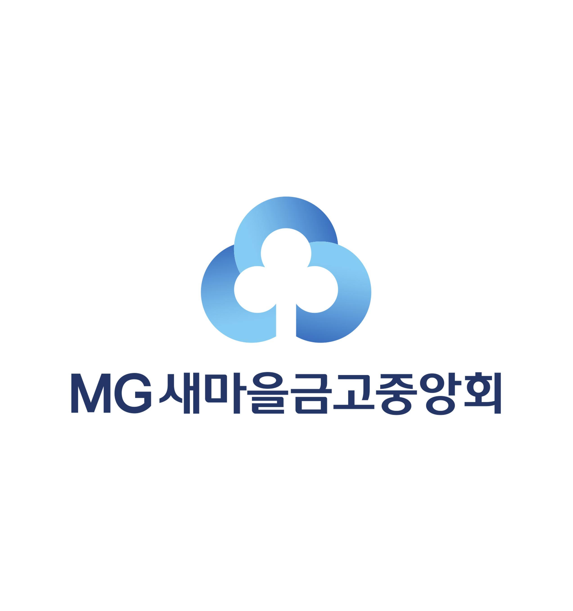
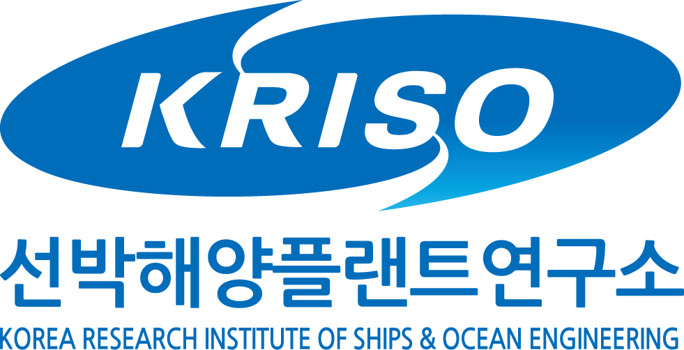
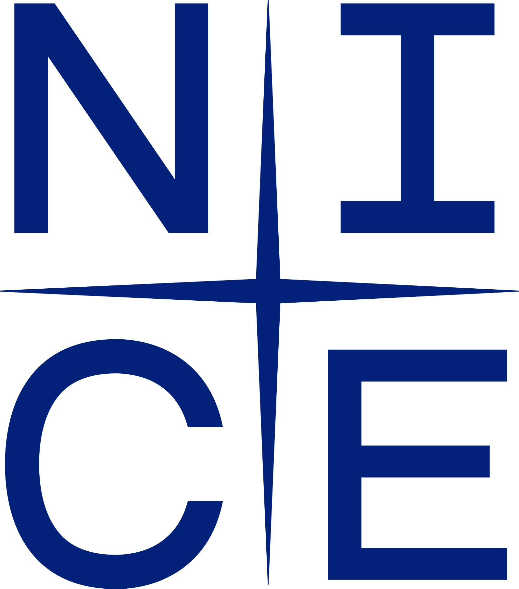
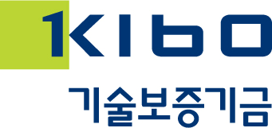
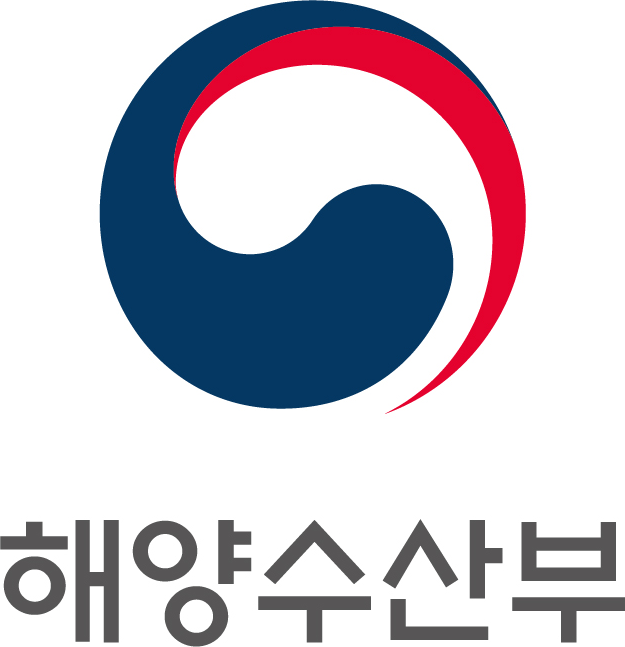
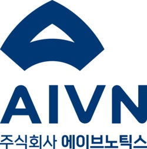
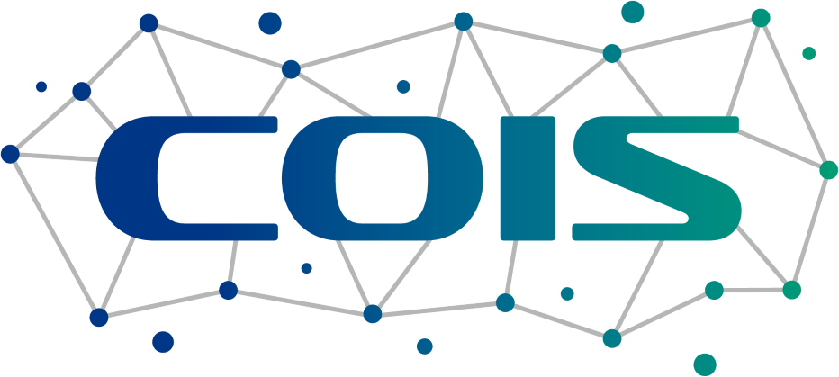

김호영Hoyoung Kim
머신러닝과 수리최적화를 기반으로 산업 시스템, 기업 신용평가, 기술기회분석 분야의 문제를 연구합니다.
CV 다운로드 (PDF)소개
단국대학교 산업공학과 Computational Optimization for Intelligent Systems Lab 에서 석사과정 연구원으로 연구하고 있습니다. 데이터 기반 예측과 수리최적화를 활용하여 산업 시스템의 의사결정 문제를 연구합니다.
학력
- 산업공학과 석사과정단국대학교2026.03 — 현재
- 경영공학과 학사단국대학교2026.02 졸업
연구 관심 분야
- 머신러닝 및 딥러닝
- 산업 시스템을 위한 예측모델링
- 수리계획 및 최적화
- 혼합정수계획 기반 자원배분 및 스케줄링 최적화
- 기술기회분석 및 기술예측
- 특허 기반 기술 인텔리전스 및 기술 공백 탐지
국내 학술지 논문
학술대회 발표
-
머신러닝 기반의 연료 소모량 예측을 활용한 선박 속도 최적화
-
스마트 물류 기술 동향 분석을 위한 특허 데이터 기반 토픽모델링 및 기술 기회 분석
주요 프로젝트
-

AI시대 인력 운영 체계 전환을 위한 직무분석 컨설팅
새마을금고중앙회 · 2026.08 — 2026.10
직무분석 결과의 세부업무 기술문을 자연어처리를 통해 행위어와 대상어 단위로 추출하고, 이를 O*NET Task 데이터와 매칭하여 업무 단위의 AI Exposure를 정량화했습니다. 이를 통해 업무별 AI 적용 가능성을 자동화·증강·영향미미 유형으로 구분하는 기준을 수립했습니다.
-

데이터 기반 연료 소모량 예측 모듈 개발 및 테스트
선박해양플랜트연구소 (KRISO) · 2026.05 — 2026.11
실제 해양환경을 반영한 머신러닝 기반 연료소모량 예측 모듈을 개발하고, 전체 항해의 연료소모량을 최소화하기 위한 MILP 기반 선속 최적화 알고리즘을 개발했습니다.
-

신용평가모형 개발 및 프로세스 개선
NICE평가정보 · 2025.09 — 2025.12
다변량 통계분석을 활용해 재무·비재무 기반 기업 신용평가 모형을 자동화하고, 해운업 특화 평가 체계를 개발했습니다.
-

개방형의 AI 투자모형 개발 및 혁신성장역량 모형 고도화 연구
기술보증기금 · 2025.07 — 2025.12
기업의 다양한 혁신역량 간 관계를 선형 및 비선형 관점에서 머신러닝으로 분석하여, 초기 창업기업까지 적용할 수 있는 미래 혁신성과 성장 가능성의 선행지표를 개발했습니다.
-

VDES 국제공동개발 및 협력 실증
해양수산부 · 2025.02 — 2027.12
해안 기지국, 선박, 위성 간 데이터 교환을 지원하는 VDES(VHF Data Exchange System)의 도입을 고려하여, 기지국의 통신 자원을 효율적으로 배분하기 위한 수학적 최적화 모델을 개발했습니다.
-

최적 Dynamic Cell Planning(DCP) 알고리즘 개발
에이브노틱스 · 2025.09 — 2025.11
Starlink 등 위성 기반 인터넷 서비스의 도입을 고려하여, 선박별 브로드캐스팅 범위와 트래픽 특성, 통신 채널 사용 패턴을 반영한 DCP 알고리즘을 개발했습니다. 이를 위해 AIS 네트워크의 커버리지를 극대화하는 수학적 최적화 모델을 설계했습니다.
-

시간표 최적화 서비스 (TOS) 알고리즘 개발
단국대학교 · 2025.07
학부 수강계획에서 사용자의 선호를 반영하는 Gurobi 기반 시간표 스케줄링 최적화 알고리즘을 개발했습니다.
수상 및 장학
-
2025.11최우수상 — 한국물류과학기술학회 2025 물류분야 논문경진대회
-
2025.11장려상 — 제21회 KMAC 경영혁신 대학(원)생 공모전
-
2025.11범은장학재단 — 범은장학생
-
2025.07우수상 — 단국대학교 단러닝클럽 Best Practice 공모전
-
2022 — 2026성적우수상 및 우등상 — 단국대학교
기술 역량
- 프로그래밍
- Python, SQL
- 최적화
- Gurobi
- 모델링 도구
- AutoMod, AutoCAD
- 자격증
- SQL 개발자 (SQLD)